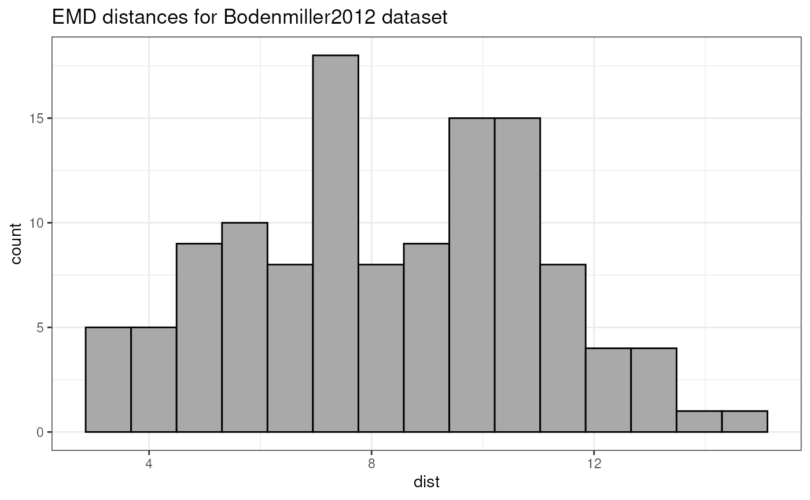
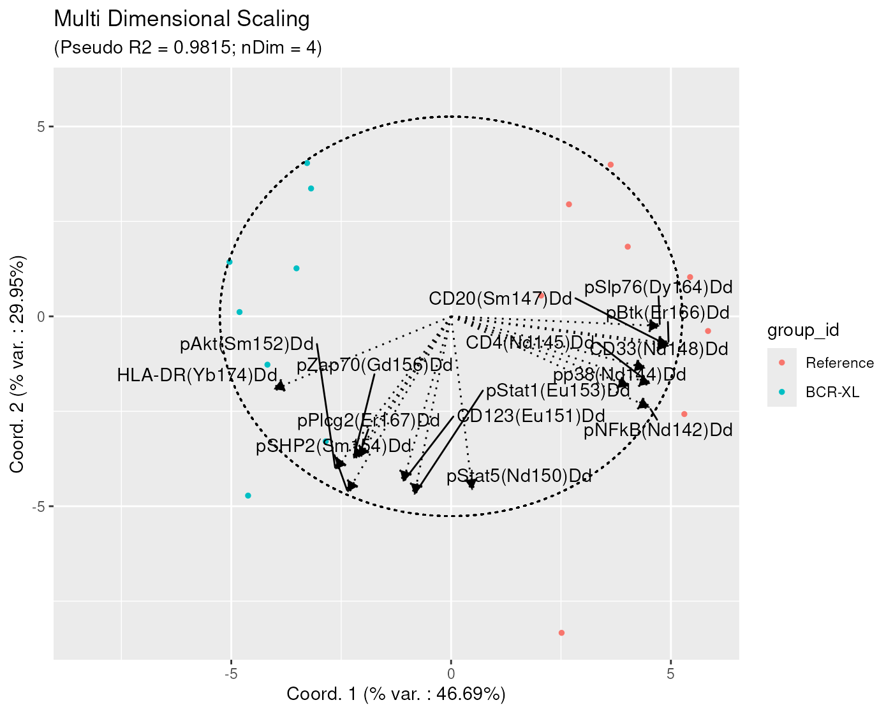
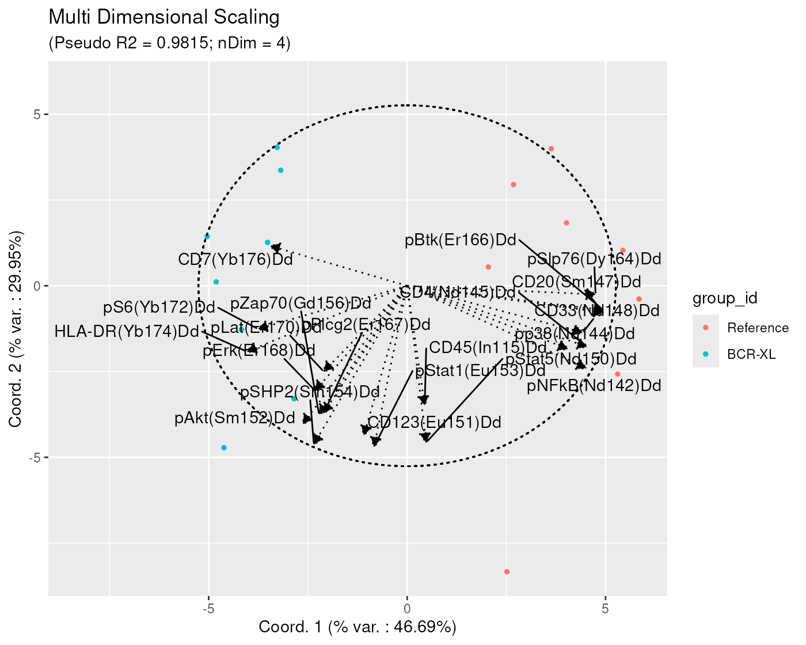
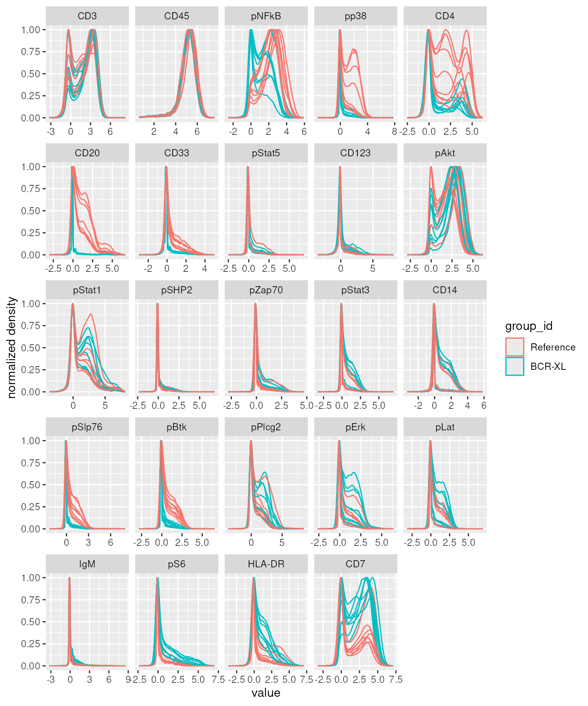
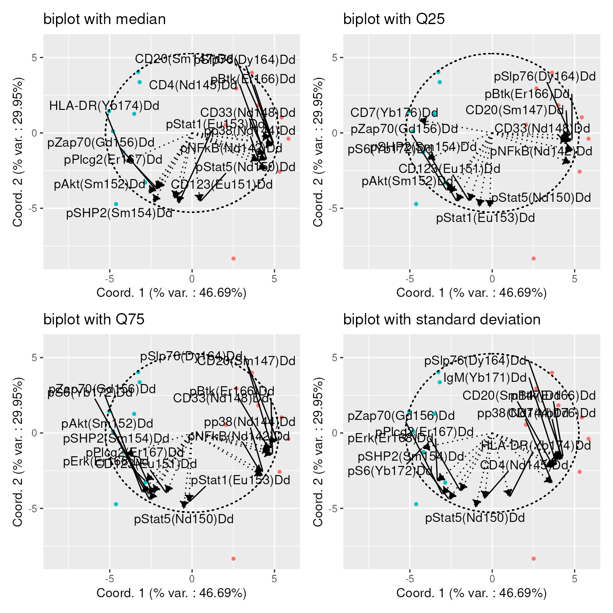
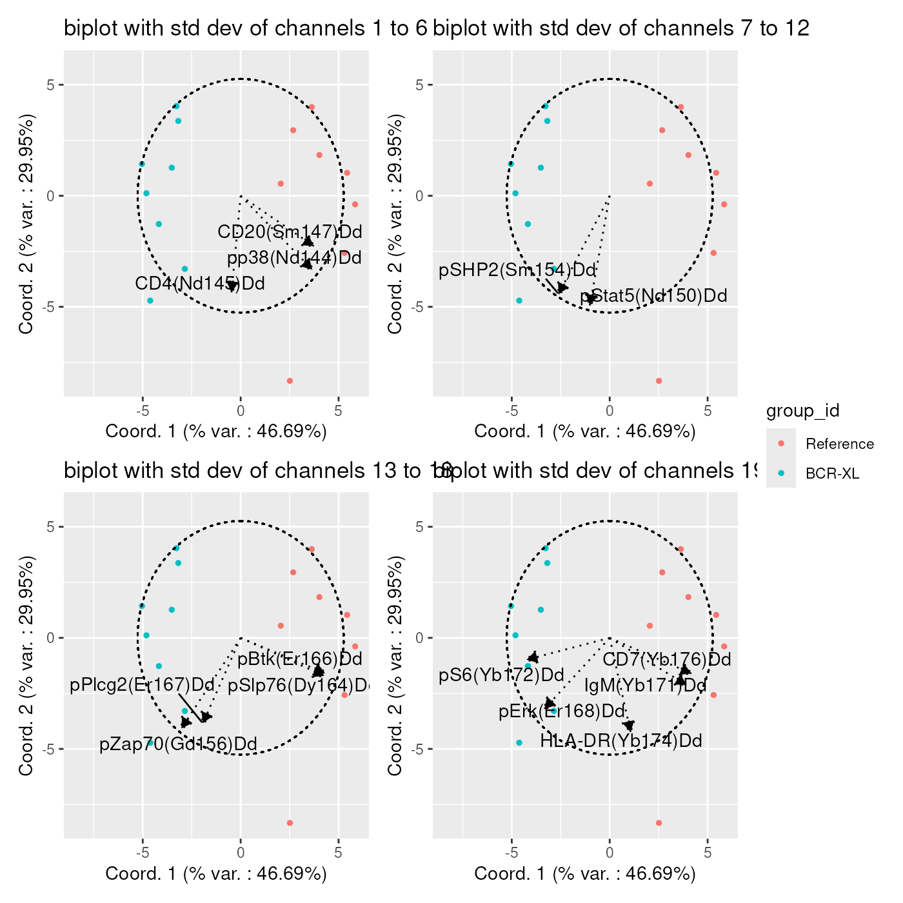
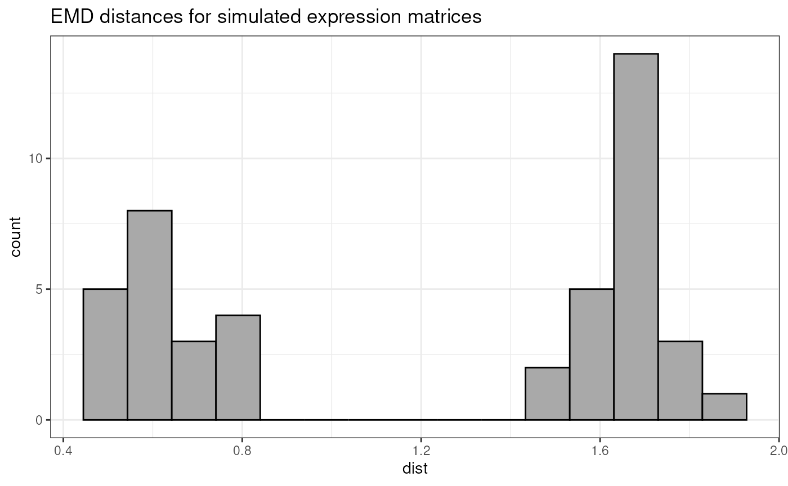
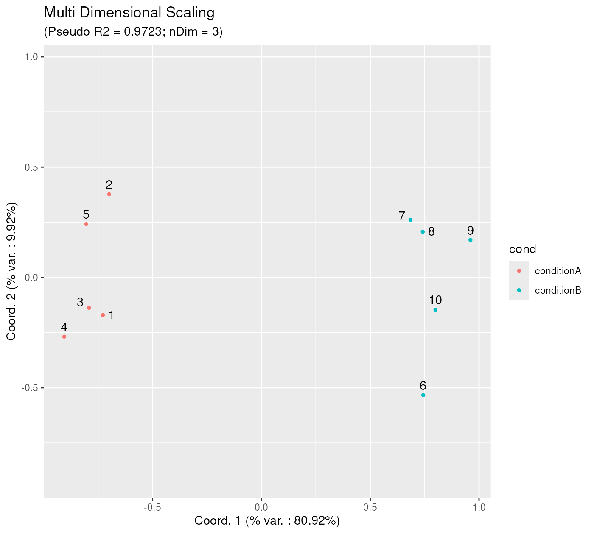

Low Dimensional Projection of Cytometry Samples
Philippe Hauchamps
Laurent Gatto
Source:vignettes/CytoMDS.Rmd
CytoMDS.RmdAbstract
This vignette describes the functionality implemented in the
CytoMDS package. CytoMDS provides
support for low dimensional projection of a set of cytometry
samples, using concepts such as Earth Mover’s (EMD) distance, and
Multi Dimensional Scaling (MDS). This vignette is distributed
under a CC BY-SA 4.0 license.
Installation and loading dependencies
To install this package, start R and enter (un-commented):
# if (!require("BiocManager", quietly = TRUE))
# install.packages("BiocManager")
#
# BiocManager::install("CytoMDS")We now load the packages needed in the current vignette:
Introduction
The CytoMDS package implements low dimensional
visualization of cytometry samples, in order to visually assess
distances between them. This, in turn, can greatly help the user to
identify quality issues like batch effects or outlier samples, and/or
check the presence of potential sample clusters that might align with
the experimental design.
The CytoMDS algorithm combines, on the one hand, the
concept of Earth Mover’s Distance (EMD) (Orlova et al. 2016), a.k.a. Wasserstein
metric and, on the other hand, the metric Multi Dimensional
Scaling (MDS) algorithm for the low dimensional projection (Leeuw and Mair 2009).
Besides projection itself, the package also provides some diagnostic tools for both checking the quality of the MDS projection, as well as interpreting the axes of the projection (see below sections).
Illustrative dataset
The illustrative dataset that is used throughout this vignette is a mass cytometry (CyTOF) dataset from (Bodenmiller et al. 2012), and provided in the Bioconductor HDCytoData data package (Weber and Soneson (2019)).
This dataset consists of 16 paired samples (8 times 2) of peripheral blood cells from healthy individuals. Among each sample pair, one sample - the reference - was left un-stimulated, while the other sample was stimulated with B cell receptor / Fc receptor cross-linker (BCR-XL).
This public dataset is known to contain a strong differential expression signal between the two conditions (stimulated vs un-stimulated) and as been used in recent work to benchmark differential analysis algorithms ((Weber et al. 2019)) and to design mass cytometry data analysis pipelines ((Nowicka et al. 2017)).
In the CytoMDSpackage, as in the current vignette,
matrices of cytometry events intensities, corresponding to one sample,
are stored as flowCore::flowFrame (Ellis et al. 2023) objects. Samples of a
particular cytometry dataset are then stored as a
flowCore::flowSet object, which is a collection of
flowFrame’s, i.e. one flowFrame per sample. Therefore, we load the
flowSet version of the BodenMiller2012 dataset, obtained from
the HDCytoData package.
BCRXL_fs <- HDCytoData::Bodenmiller_BCR_XL_flowSet()## see ?HDCytoData and browseVignettes('HDCytoData') for documentation## loading from cache## Warning in updateObjectFromSlots(object, ..., verbose = verbose): dropping
## slot(s) 'colnames' from object = 'flowSet'
BCRXL_fs## A flowSet with 16 experiments.
##
## column names(39): Time Cell_length ... sample_id population_idIn regular flowSet’s, the experimental design information is
typically
stored in the phenoData slot, and this is also the way
CytoMDS expects to get its input. However,
HDCytoData has chosen to store the experimental design
information in a slightly different way, hence the need to convert the
data as follows:
phenoData <- flowCore::pData(BCRXL_fs)
additionalPhenoData <-
keyword(BCRXL_fs[[1]], "EXPERIMENT_INFO")$EXPERIMENT_INFO
phenoData <- cbind(phenoData, additionalPhenoData)
flowCore::pData(BCRXL_fs) <- phenoDataWe also select channels/markers that are biologically relevant, i.e. both the cell type and cell state markers, and store them for further use. We discard the typical housekeeping markers that are founds in flowFrames like time and Cell_length, etc. In total, these mass cytometry samples contain intensities for 24 biologically relevant markers.
markerInfo <- keyword(BCRXL_fs[[1]], "MARKER_INFO")$MARKER_INFO
chClass <- markerInfo$marker_class
table(chClass)## chClass
## none type state
## 11 10 14
chLabels <- markerInfo$channel_name[chClass != "none"]
(chMarkers <- markerInfo$marker_name[chClass != "none"])## [1] "CD3" "CD45" "pNFkB" "pp38" "CD4" "CD20" "CD33" "pStat5"
## [9] "CD123" "pAkt" "pStat1" "pSHP2" "pZap70" "pStat3" "CD14" "pSlp76"
## [17] "pBtk" "pPlcg2" "pErk" "pLat" "IgM" "pS6" "HLA-DR" "CD7"The first step consists in scale transforming the raw data. Indeed, distances between samples make more sense with scaled transformed signal, in which distributional differences are more readable and usable for downstream analysis.
Here, since we are dealing with mass cytometry samples, we use the
classical arcsinh() transformation with 5 as
co-factor, as described elsewhere ((Nowicka et al. 2017)).
trans <- arcsinhTransform(
transformationId="ArcsinhTransform",
a = 0,
b = 1/5,
c = 0)
BCRXL_fs_trans <- transform(
BCRXL_fs,
transformList(chLabels, trans))Calculating distances between samples
We can now calculate pairwise Earth Mover’s Distances (EMD) between all samples of our dataset.
This is done by calling the pairwiseEMDDist() method The
simplest way to
use this method is by providing directly a
flowCore::flowSet, containing all samples, as input
parameter. Note that, for heavy datasets that include a lot of samples,
this can create memory issues. To handle this case, CytoMDS
provides other ways to call the pairwiseEMDDist() function
(see ‘Handling heavy datasets’ section).
Using the channels argument, it is possible to restrict
the EMD calculation to some of the channels. Here we simply pass as
input the biologically relevant markers selected in the previous
section.
pwDist <- pairwiseEMDDist(
BCRXL_fs_trans,
channels = chMarkers,
verbose = FALSE
)The calculated distance is a symmetric square matrix, with as many rows (columns) as input samples (extract shown here below for the scale-transformed Bodenmiller2012 dataset).
round(pwDist[1:10, 1:10], 2)## 1 2 3 4 5 6 7 8 9 10
## 1 0.00 10.46 4.30 11.18 6.39 12.69 7.11 11.85 5.88 10.13
## 2 10.46 0.00 10.91 3.16 11.45 6.06 13.17 10.61 9.61 6.08
## 3 4.30 10.91 0.00 10.72 7.44 13.17 7.47 12.84 5.84 10.00
## 4 11.18 3.16 10.72 0.00 12.10 5.97 12.66 9.63 10.35 6.72
## 5 6.39 11.45 7.44 12.10 0.00 9.19 4.45 10.19 5.28 9.96
## 6 12.69 6.06 13.17 5.97 9.19 0.00 10.56 7.23 11.61 7.74
## 7 7.11 13.17 7.47 12.66 4.45 10.56 0.00 7.24 8.89 11.87
## 8 11.85 10.61 12.84 9.63 10.19 7.23 7.24 0.00 14.50 11.68
## 9 5.88 9.61 5.84 10.35 5.28 11.61 8.89 14.50 0.00 7.10
## 10 10.13 6.08 10.00 6.72 9.96 7.74 11.87 11.68 7.10 0.00One relevant way to visualize this distance matrix is to draw the histogram of pairwise distances, as shown in the below plot.
distVec <- pwDist[upper.tri(pwDist)]
distVecDF <- data.frame(dist = distVec)
pHist <- ggplot(distVecDF, mapping = aes(x=dist)) +
geom_histogram(fill = "darkgrey", col = "black", bins = 15) +
theme_bw() + ggtitle("EMD distances for Bodenmiller2012 dataset")
pHist
Metric Multidimensional scaling
Calculating the MDS projection
Once the pairwise distance matrix has been calculated, computing the
Multi Dimensional Scaling (MDS) projection is done by calling
the computeMetricMDS() function. In its simplest form, only
the distance matrix needs to be passed to the function. In that case,
the number of dimensions to use in the MDS is automatically set in order
to reach a specific value for a projection quality indicator, i.e. the
target pseudo R square, which in turn is set by default to 0.95
(see Quality of projection - diagnostic tools section).
Note that the Smacof algorithm (Leeuw
and Mair 2009), used to compute the MDS projection, is
stochastic, so it is sensitive to the ‘seed’ used. Therefore, in cases
where reproducible results from one run to another is required, it is
advised to set the seed argument to a fixed value.
The returned value of the computeMetricMDS() function is
an object of the MDS class. This object can be queried to get
e.g. the number of dimensions that was effectively used, or the obtained
pseudo RSquare, as shown in the following code chunk:
mdsObj <- computeMetricMDS(pwDist, seed = 0)
show(mdsObj)## MDS object containing MDS projection (using Smacof algorithm) data:
## Nb of dimensions: 4
## Nb of points: 16
## Stress: 0.040668
## Pseudo RSquare: 0.981489
## Goodness of fit: 0.998346Plotting the MDS projection
Plotting the obtained MDS projection is done using
ggplotSampleMDS(). If no phenoData parameter
is passed, then, by default, numbers are used as labels, and samples are
represented as black dots.
ggplotSampleMDS(mdsObj)
However, by providing a ‘phenoData’ dataframe to the
ggplotSampleMDS() function, the corresponding variables can
be used for highlighting sample points with different colours and/or
shapes. Here below, the previous plot is enhanced with red and blue
colours, distinguishing samples from the two conditions. Also, we have
added more meaningful labels to each data point, corresponding to
patient id’s.
On this plot, one can clearly see a clear separation between samples of the two different conditions. These 2 sample groups are different along the x axis, which corresponds to the first projection direction, explaining 46.69 % of the variability contained in the MDS projection with 4 dimensions (as indicated in the subtitle). This clear separation between 2 condition clusters highlights the strong biological signal differentiating these two groups of samples. Further in this vignette, we shall try to assign a user interpretation to this x axis direction (see ‘Aid to interpreting projection axes’ section).
p12 <- ggplotSampleMDS(
mdsObj,
pData = phenoData,
projectionAxes = c(1,2),
pDataForColour = "group_id",
pDataForLabel = "patient_id"
)
p12
Given that 4 dimensions were used in the metric MDS algorithm, the user can visualize the MDS projection using any combination of two axes, for example axes 2 and 3n or 3 and 4, as below:
p23 <- ggplotSampleMDS(
mdsObj,
pData = phenoData,
projectionAxes = c(2,3),
pDataForColour = "group_id",
pDataForLabel = "patient_id"
)
p34 <- ggplotSampleMDS(
mdsObj,
pData = phenoData,
projectionAxes = c(3,4),
pDataForColour = "group_id",
pDataForLabel = "patient_id"
)
p23 / p34
These plots reveal two important findings: 1. Dots of the 2 samples groups are well-mixed in both views, showing that the biological difference between the two sample groups is mainly concentrated along the first projection axis. 2. Dots corresponding to samples from the same patient id are most of the time very close to each other. We could conclude that the variability contained in axes 2, 3 and 4 mostly represent biological variation between different individuals, and not (or much less) the effect of stimulation.
Quality of projection - diagnostic tools
In order to be able to trust the projected distances obtained on the
CytoMDS plots, a couple of projection quality indicators
can be verified : - the pseudo RSquare indicator shows what
percentage of the variability contained in the pairwise distance matrix
is actually contained in the low dimensional MDS projection. It is
analog to the statistical RSquare for a linear regression
model, i.e. the closer to one the pseudo RSquare is, the
better. Note that the pseudo RSquare refers to the variability
contained in ALL dimensions of the MDS projection, not
only the two plotted axes. - nDim is the number of dimensions
of the projection that was needed to obtain the corresponding pseudo
RSquare (here 4 dimensions). - the percentage of variation that is
captured along each axis (coordinates), is to be interpreted with
respect to the total variability that is captured by the MDS
projection, not the total variability.
For example, in the previous section, the MDS projection using 4 dimensions is able to capture 98.15% (pseudo RSquare) of the initial variability contained in the calculated pairwise distance matrix. Of these 98.15%, 46.69% is in turn captured by axis 1, 29.95% is captured by axis 2, 15.38% is captured by axis 3 and 7.99% is captured by axis 4.
Another useful projection quality diagnostic tool is the Shepard diagram. On this diagram, each dot represents a single distance between a sample pair, with as x coordinate the original (high dimensional) distance between the two samples, and as y coordinate the projected low dimensional distance, as obtained by the MDS projection algorithm.
In the Shepard diagram, the ideal situation is when all dots are located on a straight line passing through the (0,0) and (1,1) points. In the below diagram, one can notice that all points are very near the ideal straight line, hence the distance projections can be trusted.
ggplotSampleMDSShepard(mdsObj)Additional options for the MDS projection
In this section, we describe a couple of additional options available
to the user when calculating the MDS projection using
computeMetricMDS().
First, instead of letting the algorithm choose itself the number of dimensions, it is also possible to assign it explicitly, for example to 2, as in below:
mdsObj2 <- CytoMDS::computeMetricMDS(pwDist, seed = 0, nDim = 2)
ggplotSampleMDS(mdsObj2,
pData = phenoData,
projectionAxes = c(1,2),
pDataForColour = "group_id",
pDataForLabel = "patient_id",
flipYAxis = TRUE)
Note that the obtained projection on 2 axes, although similar, is not exactly the same as the one obtained when visualizing the first two axis of the MDS projection obtained before, with 4 dimensions. Actually, this is a feature of the Metric MDS projection, although it might appear a bit counter-intuitive at first.
Second, it is also possible to adjust the number of dimensions indirectly, by setting an explicit pseudo Rsquare target. In that case the algorithm will increase the number of dimensions until reaching the required quality target, instead of the by default 0.95 target.
The below example shows how to obtain a pseudo R Square of at least 0.99. As a result, the needed number of dimensions is now 6, instead of 4.
mdsObj3 <- CytoMDS::computeMetricMDS(pwDist, seed = 0, targetPseudoRSq = 0.99)
ggplotSampleMDS(mdsObj3,
pData = phenoData,
projectionAxes = c(1,2),
pDataForColour = "group_id",
pDataForLabel = "patient_id")
The corresponding Shepard diagram is obtained as below, showing that the dots are even more concentrated around the ideal straight line, than before:
ggplotSampleMDSShepard(mdsObj3)
Aid to interpreting projection axes
Bi-plots
With MDS projections, it is possible to (try to) associate some axis directions to specific sample characteristics. The idea is to calculate the correlation of well chosen sample statistics w.r.t. the axes of projection, so that these correlations can be represented on a correlation circle, which is overlaid on the projection plot. This plot set-up is called a ‘bi-plot’.
In order produce a bi=plot, the user first needs to calculate chosen statistics of interest for which they want to assess the association with the axis directions. Typically, one chooses channel specific statistics, like e.g. the mean, the standard deviation, or any quantile that might be of interest. However, any statistics that can be calculated for each sample can be used (number of events,…)
Here below, we provide an example where the user overlays the median of the different channels, on a bi-plot with MDS projection axes 1 and 2.
On the bi-plot, each arrow - here representing a channel median - is located at coordinates equal to its respective Pearson correlation w.r.t. the two axis.
Here, one can identify that the x axis has a strong positive correlation with the median of markers ‘CD4’, ‘CD33’, ‘CD20’, ‘pNFkB’, ‘pp38’, ‘pBtk’ and ‘pSlp76’, and a strong negative correlation with the median of marker ‘HLA-DR’. The y axis has a strong negative correlation with the median of a number of markers: ‘CD123’, ‘pStat1’, ‘pStat5’, ‘pSHP2’, ‘pAkt’, ‘pZap70’ and ‘pPlcg2’.
medians <- channelSummaryStats(BCRXL_fs_trans,
channels = chLabels,
statFUNs = median)
ggplotSampleMDS(mdsObj,
pData = phenoData,
pDataForColour = "group_id",
displayPointLabels = FALSE,
displayArrowLabels = TRUE,
repelArrowLabels = TRUE,
biplot = TRUE,
extVariables = medians)
Note that, on the bi-plots, only the arrows of length greater or equal to a specific threshold (by default set at 0.8) are represented, in order to not overwhelm the plot with arrows, especially when the dataset uses a high dimensional panel.
It is however possible to adjust this threshold by explicitly setting
the arrowThreshold argument. For example, in the below
plot, the threshold is set set to 0.6, showing, for example, that x axis
is also strongly negatively correlated with the median of ‘pS6’ and
‘CD7’ markers.
ggplotSampleMDS(mdsObj,
pData = phenoData,
pDataForColour = "group_id",
displayPointLabels = FALSE,
displayArrowLabels = TRUE,
repelArrowLabels = TRUE,
biplot = TRUE,
extVariables = medians,
arrowThreshold = 0.6)
In terms of biological interpretation, since the x axis is the direction along which there is a clear separation between stimulated and (reference) un-stimulated samples, the biplot suggests that channels for which the median appears as strongly correlated with the x axis, should also show visible distributional difference between the two sample groups.
In order to check this, we can use the
ggplotMarginalDensities method provided in the
CytoMDS package, as follows:
ggplotMarginalDensities(
BCRXL_fs_trans,
channels = chLabels,
pDataForColour = "group_id",
pDataForGroup = "sample_id") And indeed, we can notice that the Reference samples (in red) tend to show higher intensity values for markers ‘pNFkB’, ‘pp38’, ‘CD4’, ‘CD20’, ‘CD33’, ‘pSlp76’, ‘pBtk’, while BCR-XL stimulated samples (in blue) tend to show higher internsity valeus for markers ‘pS6’, ‘HLA-DR’ and ‘CD7’. All these markers where identified as strongly (resp. positively and negatively) correlated with the x axis on the bi-plot.
Bi-plot wrapping
Instead of drawing one single bi-plot related to a specific type of statistics, for example channel medians as before, we can also try to associate the axes to different channel statistics at once. In the next plot, we draw bi-plots for channel medians, 25% and 75% quantiles, and standard deviations at once.
The ‘facets-alike’ bi-plot, or bi-plot wrapping, is obtained
thanks to the ggplotSampleMDSWrapBiplots() function, which
internally calls ggplotSampleMDS() function several times,
and arrange the obtained outputs on a single plot.
statFUNs = c("median" = stats::median,
"Q25" = function(x, na.rm) {
stats::quantile(x, probs = 0.25)
},
"Q75" = function(x, na.rm) {
stats::quantile(x, probs = 0.75)
},
"standard deviation" = stats::sd)
chStats <- channelSummaryStats(BCRXL_fs_trans,
channels = chLabels,
statFUNs = statFUNs)
ggplotSampleMDSWrapBiplots(
mdsObj,
extVariableList = chStats,
ncol = 2,
pData = phenoData,
pDataForColour = "group_id",
displayPointLabels = FALSE,
displayArrowLabels = TRUE,
repelArrowLabels = TRUE,
displayLegend = FALSE)
Sometimes, as is the case on the plots below, a high number of channel statistics are strongly correlated with the bi-plot axes, so that the plot is hardly readable, due to too many arrows displayed.
In that case, it is advised to generate series of bi-plots, part of the channel statistics, in order to better identify the strongly correlated ones. One example is provided below, showing the correlation between the axes and the standard deviation of each channel:
stdDevs <- list(
"std dev of channels 1 to 6" = chStats[["standard deviation"]][,1:6],
"std dev of channels 7 to 12" = chStats[["standard deviation"]][,7:12],
"std dev of channels 13 to 18" = chStats[["standard deviation"]][,13:18],
"std dev of channels 19 to 24" = chStats[["standard deviation"]][,19:24]
)
ggplotSampleMDSWrapBiplots(
mdsObj,
ncol = 2,
extVariableList = stdDevs,
pData = phenoData,
pDataForColour = "group_id",
displayPointLabels = FALSE,
displayArrowLabels = TRUE,
repelArrowLabels = TRUE)
Handling large datasets
Computing Earth Mover’s Distances between all sample pairs of large datasets (e.g. with hundreds of samples), is a heavy computational task.
First, loading the whole data set as a
flowCore::flowSet() in RAM at once, might not be possible
due to its size. Second, calculating a matrix of pairwise distances, has
a computational complexity of O(N2), which can lead to very long
computation times for large datasets.
Therefore, the CytoMDS package provides several
mechanisms allowing to mitigate these issues.
Loading flow frames dynamically during distance matrix computation
In order to be able to handle datasets of greater size than the
available computer RAM, the pairwiseEMDDist() function
allows for an alternative input mode, where: - the input samples are NOT
provided directly via a flowCore::flowSet, or
a list of expression matrices, but - the user provides the nb of
samples, and a user-written flow frame loading function that will be
called to dynamically load the ith sample - as an expression
matrix - upon request, and optionally additional arguments.
Typically, the expression matrix loading function provided by the user shall describe how to read the ith sample from disk.
Using BiocParallel to parallelize distance matrix computation
Also, CytoMDS pairwise distance calculation supports
parallelization of distance matrix computation, through the use of
BiocParallel package.
When parallelization is used, the calculation engine will automatically create worker tasks corresponding to the calculation of blocks of the distance matrix.
In the below, we provide an example with the BodenMiller2012 dataset. Note that this example has illustrative purpose only, as in fact this dataset is small enough to fully reside in memory and to not require parallelization of distance calculation.
In case where ‘on-the-fly’ expression matrices in-memory loading is required, we advise, as a preliminary step, to store the samples, previously scale transformed, on disk. Here we do it in a temporary directory.
storageLocation <- suppressMessages(base::tempdir())
nSample <- length(BCRXL_fs_trans)
fileNames <- file.path(
storageLocation,
paste0("BodenMiller2012_TransformedSample",
sprintf("%02d.rds", seq_len(nSample))))
for (i in seq_len(nSample)) {
saveRDS(BCRXL_fs_trans[[i]],
file = fileNames[i])
}Then, the pairwiseEMDDist() method can be called, now
specifying a number of samples, a expression matrix loading function,
and a BiocParallel::SnowParam() backbone for
parallelization of the computations.
bp <- BiocParallel::SnowParam(
stop.on.error = FALSE,
progressbar = TRUE)
pwDistLast <- suppressWarnings(pairwiseEMDDist(
x = nSample,
channels = chMarkers,
loadExprMatrixFUN = function(exprMatrixIndex, files, channels, markers){
ff <- readRDS(file = files[exprMatrixIndex ])
exprMat <- flowCore::exprs(ff)[, channels, drop = FALSE]
colnames(exprMat) <- markers
exprMat
},
loadExprMatrixFUNArgs = list(
files = fileNames,
channels = chLabels,
markers = chMarkers),
BPPARAM = bp))## | | | 0% | |================== | 25% | |=================================== | 50% | |==================================================== | 75% | |======================================================================| 100%
##
## | | | 0% | |============ | 17% | |======================= | 33% | |=================================== | 50% | |=============================================== | 67% | |========================================================== | 83% | |======================================================================| 100%The obtained distances - as shown in the below histogram - are exactly the same as before.
distVecLast <- pwDistLast[upper.tri(pwDistLast)]
distVecDFLast <- data.frame(dist = distVecLast)
pHistLast <- ggplot(distVecDFLast, mapping = aes(x=dist)) +
geom_histogram(fill = "darkgrey", col = "black", bins = 15) +
theme_bw() +
ggtitle(
"EMD distances for Bodenmiller2012 dataset",
subtitle = "on the fly memory loading and parallel computation")
pHistLast
Expression matrices as input instead of flowFrames
Standard use of CytoMDS involves providing cytometry
sample data, contained in flowCore standard cytometry data
structures (flowSet and flowFrame) as input to
Earth Mover’s distance calculation.
However, CytoMDS can also accept more generic input
data, as a list of expression matrices, stored in standard R matrices.
For instance, this allows using CytoMDS visualizations for
other type of data than cytometry, as long as each sample can be
represented by a matrix with any number of rows (cells), and fixed
columns/features (markers).
Here below is an illustrating toy example with some randomly simulated data.
Let us first simulate 10 samples with 1,000 rows each and 10
features. Samples are split into 2 groups: conditionA and
conditionB with some increased expression std deviation for
3 features in conditionB, compared to
conditionA.
nSample <- 10
conditions <- factor(c(rep("conditionA", 5), rep("conditionB", 5)))
nRow <- 1000
nFeat <- 10
nDiffFeat <- 3
diffFeats = c(2, 3, 9)
stdDevFactor = 1.5
exprMatrixList <- mapply(
seq(nSample),
conditions,
FUN = function(i, condition) {
exprMatrix <- matrix(rnorm(nRow*nFeat), nrow = nRow)
if (condition == "conditionB") {
exprMatrix[, diffFeats] <- exprMatrix[, diffFeats] * stdDevFactor
}
colnames(exprMatrix) <- paste0("Feat", seq(nFeat))
exprMatrix
},
SIMPLIFY = FALSE
)
names(exprMatrixList) <- paste0("sample", seq(nSample))We can now generate a pairwise sample distance matrix, based on the previously simulated matrix list, and show the corresponding histogram:
pwDistExpr <- pairwiseEMDDist(
exprMatrixList
)
distVecExpr <- pwDistExpr[upper.tri(pwDistExpr)]
distVecDFExpr <- data.frame(dist = distVecExpr)
pHistExpr <- ggplot(distVecDFExpr, mapping = aes(x=dist)) +
geom_histogram(fill = "darkgrey", col = "black", bins = 15) +
theme_bw() +
ggtitle(
"EMD distances for simulated expression matrices")
pHistExpr
With the generated pairwise distance matrix, we can now proceed with
the CytoMDS workflow, as in the previous examples:
mdsObjExpr <- computeMetricMDS(pwDistExpr, seed = 0)
show(mdsObjExpr)## MDS object containing MDS projection (using Smacof algorithm) data:
## Nb of dimensions: 3
## Nb of points: 10
## Stress: 0.065625
## Pseudo RSquare: 0.972289
## Goodness of fit: 0.995693
phenoDataExpr <- data.frame(sampleId = seq(nSample), cond = conditions)
p12 <- ggplotSampleMDS(
mdsObjExpr,
pData = phenoDataExpr,
projectionAxes = c(1,2),
pDataForColour = "cond",
pDataForLabel = "sampleId"
)
p12
statFunctions <- list(mean = base::mean,
std_dev = stats::sd)
chStatsExpr <- channelSummaryStats(exprMatrixList,
statFUNs = statFunctions)
p <- CytoMDS::ggplotSampleMDSWrapBiplots(
mdsObj = mdsObjExpr,
extVariableList = chStatsExpr,
pData = phenoDataExpr,
projectionAxes = c(1,2),
pDataForColour = "cond",
displayPointLabels = FALSE,
repelArrowLabels = TRUE,
ncol = 2,
arrowThreshold = 0.9
)
p
Session information
## R Under development (unstable) (2024-11-20 r87352)
## Platform: x86_64-pc-linux-gnu
## Running under: Ubuntu 24.04.1 LTS
##
## Matrix products: default
## BLAS: /usr/lib/x86_64-linux-gnu/openblas-pthread/libblas.so.3
## LAPACK: /usr/lib/x86_64-linux-gnu/openblas-pthread/libopenblasp-r0.3.26.so; LAPACK version 3.12.0
##
## locale:
## [1] LC_CTYPE=en_US.UTF-8 LC_NUMERIC=C
## [3] LC_TIME=en_US.UTF-8 LC_COLLATE=en_US.UTF-8
## [5] LC_MONETARY=en_US.UTF-8 LC_MESSAGES=en_US.UTF-8
## [7] LC_PAPER=en_US.UTF-8 LC_NAME=C
## [9] LC_ADDRESS=C LC_TELEPHONE=C
## [11] LC_MEASUREMENT=en_US.UTF-8 LC_IDENTIFICATION=C
##
## time zone: UTC
## tzcode source: system (glibc)
##
## attached base packages:
## [1] stats4 stats graphics grDevices utils datasets methods
## [8] base
##
## other attached packages:
## [1] patchwork_1.3.0 ggplot2_3.5.1
## [3] CytoMDS_1.3.2 HDCytoData_1.27.0
## [5] flowCore_2.19.0 SummarizedExperiment_1.37.0
## [7] Biobase_2.67.0 GenomicRanges_1.59.1
## [9] GenomeInfoDb_1.43.1 IRanges_2.41.1
## [11] S4Vectors_0.45.2 MatrixGenerics_1.19.0
## [13] matrixStats_1.4.1 ExperimentHub_2.15.0
## [15] AnnotationHub_3.15.0 BiocFileCache_2.15.0
## [17] dbplyr_2.5.0 BiocGenerics_0.53.3
## [19] generics_0.1.3 BiocStyle_2.35.0
##
## loaded via a namespace (and not attached):
## [1] splines_4.5.0 filelock_1.0.3 tibble_3.2.1
## [4] polyclip_1.10-7 graph_1.85.0 XML_3.99-0.17
## [7] rpart_4.1.23 lifecycle_1.0.4 doParallel_1.0.17
## [10] flowWorkspace_4.19.0 lattice_0.22-6 MASS_7.3-61
## [13] backports_1.5.0 magrittr_2.0.3 Hmisc_5.2-0
## [16] sass_0.4.9 rmarkdown_2.29 jquerylib_0.1.4
## [19] yaml_2.3.10 plotrix_3.8-4 DBI_1.2.3
## [22] minqa_1.2.8 RColorBrewer_1.1-3 abind_1.4-8
## [25] zlibbioc_1.53.0 ggcyto_1.35.0 purrr_1.0.2
## [28] nnet_7.3-19 pracma_2.4.4 tweenr_2.0.3
## [31] rappdirs_0.3.3 transport_0.15-4 GenomeInfoDbData_1.2.13
## [34] ggrepel_0.9.6 gdata_3.0.1 ellipse_0.5.0
## [37] pkgdown_2.1.1.9000 codetools_0.2-20 DelayedArray_0.33.2
## [40] ggforce_0.4.2 tidyselect_1.2.1 shape_1.4.6.1
## [43] UCSC.utils_1.3.0 farver_2.1.2 lme4_1.1-35.5
## [46] base64enc_0.1-3 jsonlite_1.8.9 e1071_1.7-16
## [49] mitml_0.4-5 Formula_1.2-5 survival_3.7-0
## [52] iterators_1.0.14 systemfonts_1.1.0 foreach_1.5.2
## [55] tools_4.5.0 ragg_1.3.3 snow_0.4-4
## [58] Rcpp_1.0.13-1 glue_1.8.0 gridExtra_2.3
## [61] pan_1.9 SparseArray_1.7.2 xfun_0.49
## [64] dplyr_1.1.4 withr_3.0.2 BiocManager_1.30.25
## [67] fastmap_1.2.0 boot_1.3-31 fansi_1.0.6
## [70] digest_0.6.37 R6_2.5.1 mime_0.12
## [73] mice_3.16.0 textshaping_0.4.0 colorspace_2.1-1
## [76] gtools_3.9.5 RSQLite_2.3.8 weights_1.0.4
## [79] utf8_1.2.4 tidyr_1.3.1 hexbin_1.28.5
## [82] data.table_1.16.2 class_7.3-22 httr_1.4.7
## [85] htmlwidgets_1.6.4 S4Arrays_1.7.1 pkgconfig_2.0.3
## [88] gtable_0.3.6 blob_1.2.4 RProtoBufLib_2.19.0
## [91] XVector_0.47.0 htmltools_0.5.8.1 bookdown_0.41
## [94] scales_1.3.0 png_0.1-8 wordcloud_2.6
## [97] knitr_1.49 rstudioapi_0.17.1 reshape2_1.4.4
## [100] checkmate_2.3.2 nlme_3.1-166 curl_6.0.1
## [103] nloptr_2.1.1 proxy_0.4-27 cachem_1.1.0
## [106] stringr_1.5.1 BiocVersion_3.21.1 parallel_4.5.0
## [109] foreign_0.8-87 AnnotationDbi_1.69.0 desc_1.4.3
## [112] pillar_1.9.0 grid_4.5.0 vctrs_0.6.5
## [115] cytolib_2.19.0 jomo_2.7-6 cluster_2.1.6
## [118] htmlTable_2.4.3 Rgraphviz_2.51.0 evaluate_1.0.1
## [121] cli_3.6.3 compiler_4.5.0 rlang_1.1.4
## [124] crayon_1.5.3 smacof_2.1-7 ncdfFlow_2.53.0
## [127] labeling_0.4.3 plyr_1.8.9 fs_1.6.5
## [130] stringi_1.8.4 BiocParallel_1.41.0 nnls_1.6
## [133] munsell_0.5.1 Biostrings_2.75.1 glmnet_4.1-8
## [136] Matrix_1.7-1 bit64_4.5.2 CytoPipeline_1.7.0
## [139] KEGGREST_1.47.0 broom_1.0.7 memoise_2.0.1
## [142] bslib_0.8.0 bit_4.5.0 polynom_1.4-1